Введение
Что представляет собой платформа PrestaShop?
PrestaShop - это бесплатная платформа электронной коммерции с открытым исходным кодом. Она поддерживает платежные системы, такие как Google checkout, paypal или payments pro через APIs.
PrestaShop доступен под лицензией открытого программного обеспечения (Open Software Licence) и официально запущен в августе 2007 года для малого и среднего бизнеса. Программа, основанная на движке Smarty, используется тысячами магазинов по всему миру.
Что представляет собой шаблон PrestaShop?
Шаблон PrestaShop - это тема для платформы электронной коммерции PrestaShop. Он предоставляет широкие возможности редактирования и позволяет создать магазин, который бы полностью соответствовал всем Вашим потребностям.
Структура файлов
Приобретенный комплект шаблона состоит из нескольких папок. Проверим содержимое каждой папки:
- screenshots - содержит скриншоты темы. Для работы с шаблоном они не требуются.
- sources.zip - содержит исходные файлы темы.
- sources
- psd - файлы шаблона в формате Adobe Photoshop (.psd)
- sources
- theme - содержит файлы темы PrestaShop
- manual_install - файлы для установки вручную
- img - картинки для установки вручную
- modules - модули для установки вручную
- themes - файлы темы для установки вручную
- dump.sql - файл с демо-данными для установки вручную
- sample_data - содержит файлы для установки с демо-данными при помощи модуля sampledatainstall
- themeinstallator - содержит архив для автоматической установки темы
- theme####.zip - архив темы. Включает в себя все файлы темы. Устанавливается стандартным методом установки в PrestaShop
- manual_install - файлы для установки вручную
- fonts_info.txt - файл со ссылками на скачку шрифтов, используемых в шаблоне.
- info.txt - инструкции по разархивированию исходных файлов
Начало работы
Подготовка
Прежде, чем перейти к установке веб-сайта PrestaShop, нужно полностью подготовиться. Пожалуйста, выполните следующие шаги:
Программное обеспечение
Для полноценной работы с шаблоном мы рекомендуем скачать все требуемые приложения. Список необходимого программного обеспечения находится на странице предпросмотра шаблона. Требования для различных шаблонов могут меняться, поэтому мы перечислим лишь основные:
- Прежде всего понадобятся правильные приложения для разархивирования защищенного паролем архива sources_#########.zip. Можно использовать WinZip 9+ (Windows) и Stuffit Expander 10+ (Mac).
- Вам также может понадобиться программа Adobe Photoshop. Она используется для редактирования исходных файлов .PSD и необходима, если требуется изменить графический дизайн и изображения шаблона.
- Для редактирования исходного кода файлов шаблона нужно использовать кодовый редактор, например Adobe Dreamweaver, Notepad++, Sublime Text и т.п.
- Чтобы загрузить файлы на хостинг сервер, потребуется FTP-клиент, например Total Commander, FileZilla, CuteFTP и т.д.
Требования к серверу
Пожалуйста, убедитесь, что Ваш хостинг сервер соответствует требованиям PrestaShop:
- Система: Unix, Linux или Windows. Рекомендуется Unix.
- Веб-сервер: Apache Web server 1.3 или выше, Microsoft's IIS Web server 6.0 или выше, и nginx 1.0 или выше.
- PHP 5.2* или выше.
- MySQL 5.0 или выше.
- По крайней мере 32 Mb оперативной памяти на сервере (рекомендуется 64 Mb, чем больше, тем лучше).
PrestaShop работает с PHP 5.1 или выше, однако версии ниже 5.2 содержат ошибки, которые не позволяют некоторым функциям работать, как следует (например, неправильная дата часовых поясов).
Использование локального сервера
PrestaShop можно установить на персональном компьютере при помощи локального сервера. Для создания локального хостинг сервера необходимо использовать программное обеспечение WAMP, AppServ, MAMP и т.п. Любое из них устанавливается как обычная программа и поддерживает PrestaShop.
Вы можете воспользоваться следующими туториалами для настройки локального сервера:
Скачивание
Чтобы установить PrestaShop, скачайте движок PrestaShop с официального сайта www.prestashop.com/en/downloads
Введите имя и электронную почту в поле скачивания и нажмите кнопку 'Скачать'.
Пожалуйста, убедитесь, что версия PrestaShop соответствует требованиям шаблона. Все версии PrestaShop доступны по ссылке SourceForge.
Разархивирование файлов
По завершению скачивания движка PrestaShop, необходимо распаковать файлы и папки из архива.
Это можно сделать любой программой-архиватором, например WinZip(PC), StuffitExpander(MAC), и т.д.
Воспользуйтесь следующими туториалами, чтобы распаковать архивы при помощи WinZip(PC) и StuffitExpander(MAC).
Внимание: если в контрольной панели хостинга есть опция для работы с файлами 'Извлечь', ее можно использовать для разархивирования файлов непосредственно на сервере после загрузки .zip архивов.
Загрузка файлов движка PrestaShop
В случае, если вы распаковали архив локально (на своем компьютере), вам потребуется загрузить файлы на хостинг.
Для этого можно использовать файловый менеджер панели управления хостинга или воспользоваться одним из FTP приложений, например: FileZilla, TotalCommander, CureFTP и т.д.
Вы также можете посмотреть подробную видео инструкцию Как загрузить файлы на сервер с помощью FTP-клиента и Как загрузить файлы с помощью cPanel (WebHost менеджер, WHM).
Установка движка PrestaShop
После того, как загрузите все файлы, можно начинать установку движка PrestaShop. Откройте веб-браузер и введите доменное имя или путь к директории PrestaShop в адресной строке, затем перезагрузите страницу. Должен появиться экран приветствия. Следуйте следующим инструкциям, чтобы установить PrestaShop.
Шаг 1: Установщик (Выберите язык)
Выберите язык установки
Внимание: язык установки не повлияет на языки магазина. По умолчанию, PrestaShop устанавливается на английском. Вы можете устанавливать дополнительные пакеты локализации, чтобы изменить язык магазина после установки PrestaShop.

После того, как выберете язык, нажмите кнопку 'Далее'.
Шаг 2: Установщик (Лицензионное соглашение)
Ознакомьтесь с лицензионным соглашением.

Затем нажмите кнопку 'Далее'.
Шаг 3: Системная совместимость
Проверьте настройки PHP и разрешения директорий. В случае ошибок, пожалуйста, обратитесь к хостинг провайдеру за поддержкой.

Если все верно, нажмите кнопку 'Далее'.
Шаг 4: Настройки магазина
На данном этапе нужно указать настройки магазина, а именно название, деятельность, страну, часовой пояс и т.п.
Все эти настройки можно изменить позже в панели управления PrestaShop.

Шаг 5: Системные настройки
Если у вас уже есть база данных MySQL, введите детали в соответствующие поля.
В противном случае, детали базы данных можно получить в контрольной панели хостинга или у хостинг провайдера.

По завершению нажмите кнопку 'Далее'.
Шаг 6: Установка завершена
Заключительный этап установки.

В целях безопасности нужно удалить папку /install/ на сервере.
Начиная с версии 1.5.4, PrestaShop переименовывает административную папку автоматически: название выглядит как "admin" с 4 случайными числами, например "admin8814." Переименование происходит, как только вы впервые открываете папку "admin" в браузере: PrestaShop переименовывает ее, затем открывает уже переименованную папку.
Войдите в панель управления PrestaShop, используя переименованную директорию "admin", и начните заполнять каталог своими данными.
Войдите в панель управления PrestaShop, используя переименованную директорию "admin", и начните заполнять каталог своими данными.
В случае возникновения сложностей, воспользуйтесь официальным руководством по установке PrestaShop.
Установка шаблона
1. Импорт темы
Внимание: данный метод не устанавливает демо-данные.
1. Подготовка шаблона.
Перед тем, как начать, убедитесь, что вы уже скачали и распаковали файлы шаблона. Вы можете воспользоваться детальными туториалами, как извлечь файлы из архива шаблона при помощи WinZip и StuffitExpander.
После извлечения файлов можно перейти к загрузке шаблона.
2. Установка.
Войдите в панель управления PrestaShop и перейдите в Preferences -> Themes (Настройки -> Темы). В верхнем углу нажмите кнопку Add new theme (Добавить новую тему).

Щелкните кнопку Add file (Добавить файл) в разделе Import from your computer (Импортировать с компьютера). Перейдите к разархивированному шаблону и откройте папку themeinstallator.
Выберите файл .zip темы и нажмите Save (Сохранить).

Начнется процесс загрузки. Затем появится сообщение, что тема успешно загружена. Иконка новой темы появится в списке установленных тем.

Чтобы активировать тему, наведите курсор мыши на иконку предпросмотра темы и нажмите Use this theme (Использовать эту тему).

Появится экран с информацией об используемых в теме модулях, количестве модулей, которые отключаются и включаются. Чтобы продолжить, нажмите Save (Сохранить).

После этого появится выпадающее окно с уведомлением об успешной активации темы: тема была успешно установлена, картинки регенерированы до заданных в теме разрешений. Для завершения установки нажмите кнопку Finish (Завершить).

2. Автоматическая установка с использованием демо-данных (модуль Sample data installer)
После установки демо-данных, ваш магазин PrestaShop будет выглядеть точь-в-точь как на демо. Он будет содержать все образцы товаров, категорий, настройки модулей и магазина.
Пожалуйста, не используйте демо-данные для действующего сайта! Это перезапишет все товары и настройки магазина.
Для установки демо-данных через модуль Sample data installer, следуйте инструкции из шага 1 (Импорт темы) данного руководства. Затем в панели управления магазина появится модуль Sample data installer.
При помощи этого модуля можно легко установить демо-данные за несколько простых действий. Выполните следующее:
-
В панели управления нажмите "Install Demo Store (Установить демо-магазин)".

-
Выделите и загрузите файлы демо-данных из папки 'sample_data' шаблона. Это можно сделать при помощи кнопки "Browse local files (Найти файлы)" или перетянуть файлы демо-данных в окно браузера.

-
Дождитесь завершения загрузки файлов.

-
Нажмите кнопку "Continue Install (Продолжить установку)".

-
После этого модуль Sample data installer автоматически настроит магазин и другие модули. Это может занять несколько минут.

-
По завершению установки демо-данных необходимо выполнить последнее действие - регенерировать картинки. Нажмите кнопку "Go To Regenerate Page (Перейти на страницу регенерации)".

-
Чтобы регенерировать картинки, кликните кнопку "Regenerate thumbnails (Регенерировать миниатюры)".

3. Установка шаблона вручную с использованием демо-данных
После установки демо-данных, ваш магазин PrestaShop будет выглядеть точь-в-точь как на демо. Он будет содержать все образцы товаров, категорий, настройки модулей и магазина.
Пожалуйста, не используйте демо-данные для действующего сайта! Это перезапишет все товары и настройки магазина.
1. Загрузка файлов шаблона
Для загрузки файлов на сервер:
- Откройте папку шаблона.
- Перейдите в папку /theme/manual_install/.
- Загрузите папки /img/, /modules/ и /themes/ в корневую директорию PrestaShop.
Вы можете посмотреть детальные видео туториалы как загрузить файлы на сервер при помощи FTP-клиента и как загрузить файлы на сервер через cPanel (WebHost Manager, WHM).
2. Установка демо-данных
Демо-данные хранятся в файле .SQL. Он находится в папке theme/manual_install/ шаблона и называется dump.sql.
Файл dump.sql можно установить при помощи phpMyAdmin или другого инструмента управления базами данных контрольной панели хостинга. Вам может пригодится подробная инструкция как импортировать SQL файлы.
Перед началом импорта сделайте резервную копию базы данных. Вы можете посмотреть детальный видео туториал как создать резервную копию базы данных.
Убедитесь, что версия движка PrestaShop соответствует требованиям шаблона. В противном случае база данных будет повреждена.
Когда импорт файла dump.sql завершится, необходимо активировать шаблон.
В панели управления PrestaShop, перейдите в Preferences > Themes (Настройки > Темы), выберите шаблон в списке Themes (Темы) и нажмите Save (Сохранить).
3. Добавление языков в онлайн-магазин.
Когда мульти-языковой шаблон будет установлен, вы сможете добавлять в свой онлайн-магазин любые поддерживаемые языки к тем, что уже есть в наличии (английский, французский, испанский, немецкий, русский). Это можно сделать следующим образом:
Перейдите в 'Localization > Translations (Локализация > Переводы)' в панели управления, найдите 'ADD/UPDATE A LANGUAGE (ДОБАВИТЬ/ОБНОВИТЬ ЯЗЫК)', выделите языки из выпадающего меню (1) и нажмите кнопку 'Add or update a language (Добавить или обновить язык)' (2).

Если какие-либо языки не нужны, их можно удалить (2) или отключить (1) в меню 'Localization > Languages (Локализация > Переводы)'.

4. Установка шаблона на существующий магазин
Данный метод установки следует использовать в том случае, если у вас уже есть действующий сайт PrestaShop и необходимо просто установить шаблон.
1. Загрузка файлов шаблона и активация темы
- Откройте папку шаблона.
- Перейдите в папку /theme/manual_install/.
- Загрузите папки /modules/ и /themes/ в корневую директорию PrestaShop.
Вы можете посмотреть детальные видео туториалы как загрузить файлы на сервер при помощи FTP-клиента и как загрузить файлы на сервер через cPanel (WebHost Manager, WHM).
В панели управления PrestaShop перейдите в Preferences > Themes (Настройки > Темы), выберите установленную тему (также можно выбрать активную тему, это никак на нее не повлияет). Нажмите кнопку Advanced settings (Расширенные настройки).

-
В появившемся окне укажите директорию с новой темой и нажмите кнопку Save (Сохранить).

2. Установка модулей
Каждый шаблон включает особые настройки модулей. Чтобы модули выглядели так же, как на демо, их нужно настроить. Все модули настраиваются в панели управления PrestaShop.
1. В панели управления PrestaShop, выберите Modules > Modules (Модули > Модули) в главном меню.
На странице модулей находится список всех доступных модулей PrestaShop. Некоторые из них нужно установить.
Чтобы установить модуль, найдите его в списке и нажмите кнопку 'Install (Установить)'.

Используя ссылки модуля, вы можете его активировать/дезактивировать (ссылки Enable (Включить)|Disable (Отключить)), сбросить настройки к стандартным (ссылка Reset (Сбросить)), удалить модуль (ссылка Delete (Удалить)) или настроить (ссылка Configure (Настроить)).

2. После активации нужных модулей, их необходимо расположить в правильные позиции.
В панели управления PrestaShop, выберите Modules > Positions (Модули > Позиции) в главном меню. Чтобы поставить модуль в требуемую позицию, просто перетяните его в блоке в списке модулей.

3. Настройка изображений
В PrestaShop можно использовать заданные разрешения для картинок товаров, категорий, производителей и т.п.
Например, размеры изображения типа 'home' обычно используются для картинок в списке категорий, 'large' для главного изображения товара на странице товара.
Чтобы настроить разрешения изображений, откройте панель управления PrestaShop, перейдите в Preferences > Images (Настройки > Изображения) и установите размеры картинок, как описано на странице Configuration Page (Настройки шаблона) демо.
Основные туториалы
1. Как изменить название магазина
Чтобы изменить название магазина, откройте панель управления PrestaShop и перейдите в Preferences > Store Contacts (Настройки > Контактные данные магазина), раздел Contact details (Контактные данные).
В поле Shop name (Название магазина) введите название магазина и нажмите кнопку Save (Сохранить) для сохранения изменений.

2. Как редактировать слайдер
Чтобы редактировать изображения слайдера, найдите модуль Image slider for your homepage (Слайдшоу для домашней странице) на странице Modules (Модули) магазина PrestaShop. Он находится в разделе Front Office Features (Функции front-office). Щелкните кнопку Configure (Настроить), чтобы редактировать модуль.

На странице настроек модуля можно изменить опции слайдера (например, ширину, скорость, и прочее) и редактировать слайд (картинки слайдера, URL, описание, и т.п.).

Пользовательские модули и расширения
Smart Blog
Smart blog - набор модулей, позволяющий создать блог в магазине. Он состоит из следующих модулей: Smart Blog, Лента RSS Smart Blog, Архив Smart Blog , Категории Smart Blog , Новое на главной странице, Последние комментарии Smart Blog, Модуль социальных сетей Smart Blog , Популярные записи Smart Blog, Свежие записи Smart Blog, Похожие записи Smart Blog, Поиск Smart Blog, Теги Smart Blog. Он также включает собственные блоки, в которых модули блога могут отображаться на сайте. К тому же, они могут располагаться в стандартных блоках (только колонки).
Smart Blog
Это основной модуль с множеством настроек функциональности блога. После его установки в панели управления в главном меню появится новая вкладка Блог, где вы сможете добавлять/удалять/редактировать записи/категории или выбирать тип и разрешения изображений, используемых в записях (типы и разрешения картинок записей отличаются от настроек изображений в магазине). Чтобы добавить настройки отображения модуля на сайте, перейдите в Smart Blog (Modules->Front Office Features->Smart Blog) ((Модули->Функции front-office->Smart Blog)) и добавьте все параметры.

Описание параметров:
- Meta Title (Мета-заголовок) - заголовок блога, который будет отображаться на всех страницах.
- Meta Keyword (Ключевые мета-слова) - ключевые слова, используемые поисковыми движками для лучшего SEO.
- Meta Description (Мета-описание) - описание блога, используемое поисковыми движками для лучшего SEO.
- Main Blog Url (Основной Url блога) - URL вашего блога.
- Use .html with Friendly Url (Добавлять .html к человекопонятной ссылке) - включить/отключить добавление .html к человекопонятной ссылке.
- Number of posts per page (Количество записей на странице) - количество записей, отображаемых на странице (страницы категорий/архивов, и т.п.).
- Auto accepted comment (Автоматическое добавление комментариев) - включить/отключить автоматическое добавление комментариев пользователей. Если включить, комментарии будут добавлены без проверки администратора.
- Enable Captcha (Включить Captcha) - включить/отключить Captcha под формой "Оставьте комментарий" на странице товаров.
- Enable Comment (Включить комментарии) - включить/отключить оставление комментариев пользователями.
- Show Author Name (Показывать имя автора) - включить/отключить отображение автора записи на страницах блога и отдельных записей
- Show Post Viewed (Показывать посещенные записи) - включить/отключить отображение количества просмотров записи пользователями. Располагается под записями на страницах блога и на отдельных страницах записей.
- Show Author Name Style (Формат имени автора) - изменение формата имени автора.
- AVATAR Image: (Фото:) - добавление стандартного фото для всех пользователей.
- Show No Image (Показывать изображение "Нет фото") - включить/отключить стандартное изображение. Используется для тех записей/категорий и т.п., у которых нет картинки.
- Show Category (Показывать категории) - включить/отключить отображение картинок и описаний категорий на страницах категорий блога.
- Blog Page Column Setting (Формат колонок страницы блога) - настройка отображения связанных с блогом модулей. Часто включает дополнительные настройки, поэтому рекомендуется устанавливать дополнительные модуля стандартным способом панели управления в PrestaShop.
- Custom CSS (CSS пользователя) - в этом поле можно добавлять дополнительные стили. Осторожно используйте существующие классы темы, иначе могут возникать конфликты стилей.
- Delete Old Thumblr (Удалить старую миниатюру) - используется для обновления изображений блога после того, как были изменены разрешения картинок или добавлен новый тип. Для обновления выберите Yes (Да) и нажмите Regenerate (Обновить).
ТОЛЬКО ПОСЛЕ ЭТОГО можно устанавливать другие, связанные с блогом, модуля. Процесс удаления противоположный, СНАЧАЛА, НУЖНО УДАЛИТЬ ВСЕ ДОПОЛНИТЕЛЬНЫЕ МОДУЛЯ и только после этого модуль Smart Blog.
Лента RSS Smart Blog
Модуль генерирует новостную ленту для блога.

Включает несколько настроек в панели управления:
- Update Period (Период обновления) - позволяет отображать записи за определенный период времени (час/день/неделя/месяц/год).
- Update Frequency (Частота обновления) - позволяет задать частоту обновления (1 неделя, 2 часа, и т.п.).
Сверху находится путь к файлу, в котором будут генерироваться новости. Он состоит из URL сайта + /modules/smartblogfeed/rss.php.
Архив Smart Blog
Этот блок отображается в левой/правой колонке и сортирует записи по периоду времени (месяц).
Не имеет дополнительных настроек.
Категории Smart Blog
Этот блок отображается в левой/правой колонке и сортирует записи по категории.
Не имеет дополнительных настроек.
Новое на главной странице
Данный блок располагается только в позиции homepagecontent и показывает последние записи на домашней странице.

Настройки:
- Number of posts to display in Latest News (Количество отображаемых записей в последних новостях) - количество записей на домашней странице.
Последние комментарии Smart Blog
Блок отображается в левой/правой колонке и показывает последние комментарии к записям блога.

Настройки:
- Number of Comments to Show (Количество отображаемых комментариев) - количество комментариев в блоке.
Модуль социальных сетей Smart Blog
Блок отображается на страницах записи и позволяет делиться записью в социальных сетях.
Не имеет дополнительных настроек.
Популярные записи Smart Blog
Этот блок отображается в левой/правой колонке и показывает наиболее часто просматриваемые записи блога.

Настройки:
- Number of popular Posts to Show (Количество отображаемых популярных записей) - количество популярных записей в блоке.
Свежие записи Smart Blog
Блок отображается в левой/правой колонке и показывает новые записи блога.

Настройки:
- Show Number Of Recent Posts (Количество отображаемых свежих записей) - количество свежих записей в блоке.
Похожие записи Smart Blog
Блок отображается на страницах записи и показывает похожие записи.

Настройки:
- Show Number Of Related Posts (Количество отображаемых похожих записей) - количество отображаемых похожих записей.
Поиск Smart Blog
Этот блок отображается в левой/правой колонке и позволяет вести поиск в блоге.
Не имеет дополнительных настроек.
Теги Smart Blog
Этот блок отображается в левой/правой колонке и позволяет отображать теги блога.

Настройки:
- Number of Tag to Show (Количество отображаемых тегов) - количество тегов в блоге.
TM Mega Menu
Модуль предназначен для создания сложных меню. В модуле предусмотрена возможность отображения одного пункта (без подменю), пункта с подменю и пункта с подменю в виде многорядного и многоколоночного блока. Модуль может использоваться в разных позициях, но при этом будет отображать тот же контент. Доступные позиции: top(displayTop), left(displayLeftColumn), right(displayRightColumn), footer(displayFooter). В меню можно добавлять категории (с подкатегориями), CMS категории (с подкатегориями), производителей (по одному и списком), поставщиков (по одному и списком), магазины (если используется несколько магазинов), ссылки на любой продукт, блок с информацией о продукте, пользовательские ссылки не ограниченные по количеству, пользовательские HTML блоки не ограниченные по количеству, и баннера. Подробнее см. ниже.
Вкладки TM Mega Menu
Вкладки в TM Mega Menu - это основные элементы, которые являются корневой частью меню.
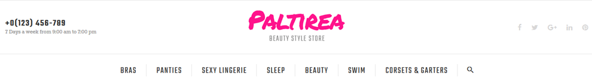
Для того чтобы создать новую вкладку откройте модуль TM Mega Menu и нажмите + в таблице Tabs list (Список вкладок)
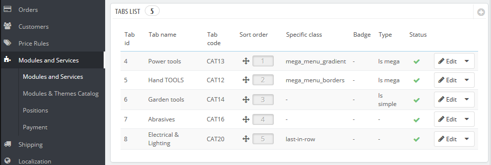
В появившейся форме заполните нужные поля
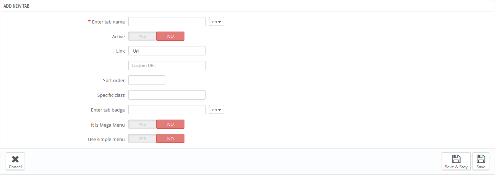
- Enter tab name (Добавить название вкладки) - название вкладки, обязательное для заполнения на основном языке, если поля дополнительных языков не заполнены, то название получит значение основного языка. Обязательно для заполнения.
- Active (Активная вкладка) - активная/неактивная вкладка.
- Link (Ссылка) - ссылка на которую ссылается данная вкладка. Можно ввести пользовательскую ссылку или выбрать из существующих вариантов (категории, CMS категории). Если оставить поле пустым, ссылка данной вкладки не будет активна.
- Sort order (Порядок сортировки) - порядок отображения вкладок.
- Specific Class (Определенный класс) - класс, который будет добавлен к элементу для его выделения (CSS класс).
- Enter tab badge (Добавить бейдж вкладки) - заполняется в зависимости от мультиязычности.
- It is Mega Menu (Это Mega Menu) - подменю данной вкладки - Mega Menu. *
- Use simple menu (Использовать простое меню) - подменю данной вкладки - простое меню. **
* It is Mega Menu (Это Mega Menu). Если выбран этот пункт, появится форма для создания сложного меню (Mega Menu).
Сложное меню состоит из рядов и колонок в рядах.
Ряд - это часть структуры Mega Menu. В нем размещены колонки меню. Удалить уже существующий ряд можно нажав соответствующую кнопку. Ряд удалится с содержащимся в нем контентом. Количество рядов не ограничено.
Колонка - это часть структуры Mega Menu, которая размещена внутри рядов. (Класс) Ширина колонки не может быть меньше 2 и больше 12. Для корректного отображения меню суммарная ширина колонок не должна превышать 12. Ширина (класс) это тип колонки Bootstrap, и соответствует тем же значениям.
Для создания меню нажмите кнопку Add row (Добавить ряд)
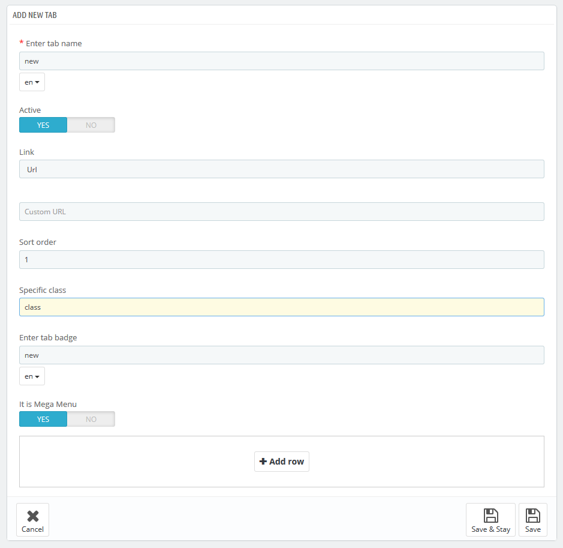
В появившейся форме нажмите кнопку Add column (Добавить колонку)
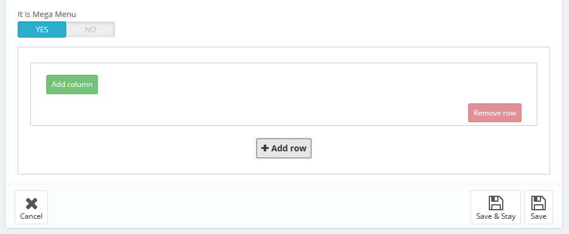
Появится всплывающее окно, в котором нужно указать класс колонки (от 2 до 12). После этого появится сама колонка, в которой нужно добавить необходимые настройки,
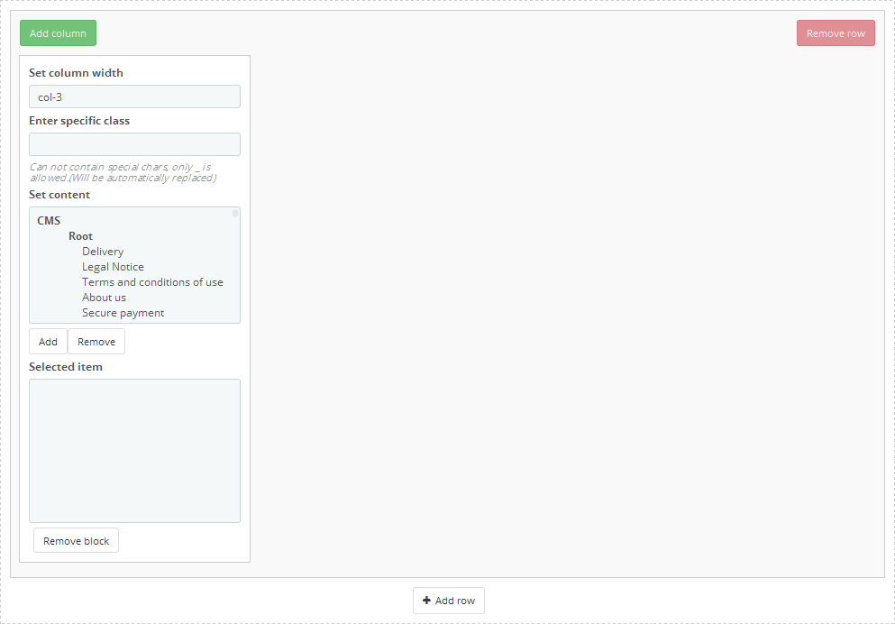
здесь вы можете поменять класс колонки, добавить CSS класс, а также нужный контент из предоставленного списка. Добавление/удаление контента работает при помощи двойного щелчка по нужному элементу, или при помощи выделения нужного/нужных элементов и нажатии соответствующей кнопки.
Удалить блок можно нажав кнопку Remove block (Удалить блок) в нижней части блока.
При удалении ряда удаляются все колонки, которые он содержит.
** Use simple menu (Использовать простое меню). Если выбран этот пункт, появится форма для создания простого меню. Это меню, которое отображает выбранный контент в одну колонку. Если в контенте есть вложенный контент, добавляется новая колонка.
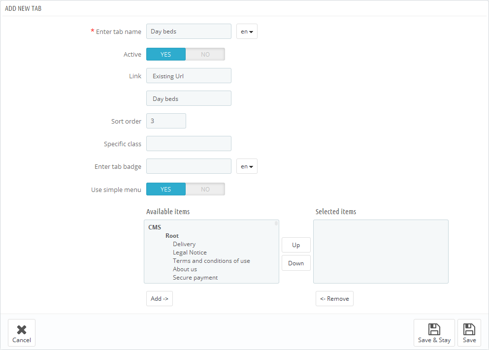
Для перемещения доступного контента в выбранное меню используйте двойной щелчок или выделите нужный контент и нажмите соответствующую кнопку.
Информация неактивного меню сохраняется при переключении между типами меню и вы в любое время можете изменить тип меню.
TM Mega Menu HTML
В этом пункте мы рассмотрим, как создавать блоки с пользовательским HTML в Mega Menu.
В модуле есть таблица с перечнем всех доступных блоков, в которую вы можете добавить новый блок, нажав кнопку + в правом верхнем углу таблицы.
В появившейся форме заполните необходимые поля.
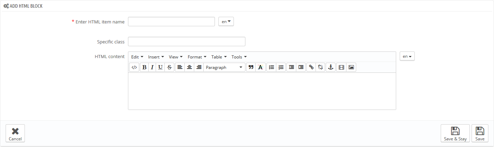
- Enter HTML item name (Добавить название HTML элемента) - название HTML блока, обязательно для заполнения на основном языке.
- Specific class (Особый класс) - CSS класс для блока.
- HTML content (HTML содержимое) - HTML контент.
Добавленный блок появится в списке блоков, а также в списке доступного контента при создании блоков меню.
TM Mega Menu Links
В этом пункте мы рассмотрим, как создавать пользовательские ссылки в Mega Menu.
В модуле есть таблица с перечнем всех доступных ссылок, в которую вы можете добавить новую ссылку, нажав кнопку + в правом верхнем углу таблицы.
В появившейся форме заполните необходимые поля.
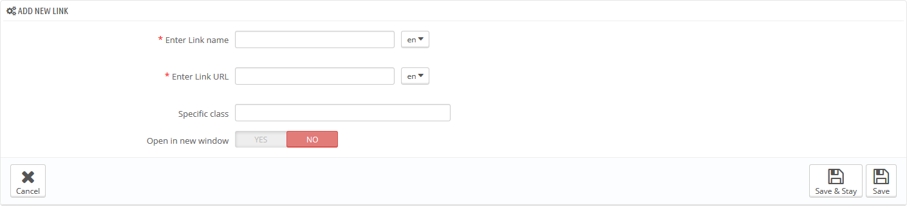
- Enter Link name (Введите название ссылки) - название ссылки, обязательно для заполнения на основном языке.
- Enter Link URL (Введите URL ссылки) - путь ссылки, обязательно для заполнения на основном языке.
- Specific class (Введите класс) - CSS класс для блока.
- Open in new window (Открывать в новом окне) - открывать ссылку в новом окне.
Добавленная ссылка появится в списке ссылок, а также в списке доступного контента при создании блоков меню.
TM Mega Menu Banners
В этом пункте мы рассмотрим, как создавать баннера в Mega Menu.
В модуле есть таблица с перечнем всех доступных баннеров, в которую вы можете добавить новый баннер, нажав кнопку + в правом верхнем углу таблицы.
В появившейся форме заполните необходимые поля.
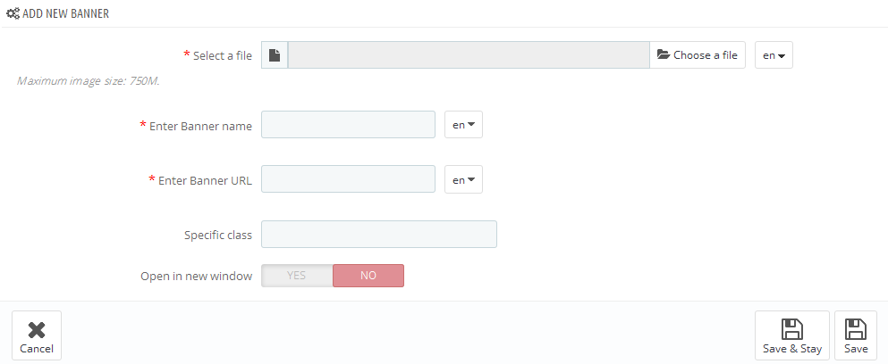
- Select a file (Выбрать файл) - выберите файл, обязательно для заполнения на основном языке.
- Enter Banner name (Введите название баннера) - название баннера, обязательно для заполнения на основном языке.
- Enter Link URL (Введите URL баннера) - путь ссылки, обязательно для заполнения на основном языке.
- Specific class (Особый класс) - CSS класс для блока.
- Open in new window (Открывать в новом окне) - открывать ссылку в новом окне.
Добавленный баннер появится в списке баннеров, а также в списке доступного контента при создании блоков меню.
Модуль Media Parallax
Что такое эффект Параллакс (parallax)?
Параллакс-скроллинг - это специальная техника скроллинга в компьютерной графике, при которой изображения на заднем фоне двигаются медленнее тех, что на переднем фоне, создавая, таким образом, иллюзию глубины и эффект погружения в двухмерной видео-игре. Веб-дизайнеры начали внедрять параллакс-скроллинг в 2011, используя HTML5 и CSS3. Веб-сайты с параллакс-фоном становятся все более популярной стратегией, в его пользу говорит возможность запросто добавить подвижности сайту. К тому же, сторонники параллакса используют такой фон, как средство привлекать пользователей и улучшать общее впечатление о сайте. Параллакс-скроллинг, улучшая внешний вид сайта, позволяет создавать динамический, интерактивный интерфейс для пользователя.
Данный модуль добавит эффект параллакс на сайт, не требуя каких-либо дополнительных навыков и усилий. В качестве фона можно добавлять картинки и видео.

Настройки: (только для Google Chrome)
- Enable smooth scroll for Google Chrome browser (Добавить плавный скроллинг для браузера Google Chrome) - добавить дополнительный эффект.
- Smooth scroll time (Время плавного скроллинга) - время эффекта плавного скроллинга.
- Smooth scroll distance (Расстояния плавного скроллинга) - расстояние эффекта плавного скроллинга.
Добавление модуля Media parallax
- Рекомендуется добавлять класс или индекс в содержимое HTML страницы. Вы также можете использовать уникальный тег, который не будет повторяться.
- Создайте изображение необходимого размера (желательно, чтобы картинка была больше размеров блока, куда будет добавлен эффект). Если вы хотите использовать видео, его нужно подготовить в 3 форматах: .mp4,.webm и .ogv, а также добавить картинку предпросмотра такого же размера (.png, .jpg и .gif)
-
Щелкните кнопку Add container (Добавить контейнер) в Add new block (Добавить новый блок).

-
В появившемся экране задайте все требуемые настройки.

Настройки:
- Selector (Селектор) - элемент, к которому будет добавлен эффект (индекс или уникальный тег).
- Parallax type (Тип параллакса) - тип эффекта, который будет использоваться (картинка или видео).
- Media files (Медиа файлы) - загрузите все необходимые файлы.
- Нажмите кнопку Save (Сохранить).
Настройки модуля Media parallax
-
В списке Параллакс-блоков найдите нужный и поменяйте настройки.

Удаление модуля Media parallax
-
В списке Параллакс-блоков найдите нужный и нажмите кнопку Delete (Удалить).

Модуль Video Background (Видео-фон)
Данный модуль позволяет добавлять видео на фон любого блока HTML страницы (у элемента должен быть индекс или уникальный тег).
Чтобы добавить видео-фон, сделайте следующее:
- Загрузите видео-файлы и картинки предпросмотра в папку modules/tmvideobackground/video (или любую другую папку на сервере) через FTP. Видео нужно загружать в 3 форматах: .mp4, .ogv, .webm, все файлы должны иметь одинаковые названия (ocean.mp4, ocean.ogv, ocean.webm). Картинки предпросмотра также должны быть в 3 форматах: .jpg, .gif, .png и иметь одинаковые названия (ocean.jpg, ocean.gif, ocean.png).
- В панели управления откройте Video background module (Модуль видео-фон) (Modules->Front Office Features->Video background module (Модули->Функции front-office->Модуль видео-фон)) и выберите требуемые настройки.

Настройки:
- Video selector (Селектор видео) - элемент HTML страницы, в который будет добавлен видео-фон (индекс или уникальный тег (body, header, footer, и т.п.).
- Video path (Путь к видео) - путь к видео-файлам (путь должен заканчиваться на /), файлы могут находиться в любой папке на сервере, но мы рекомендуем загружать их в директорию modules/tmvideobackground/video/.
- Video files name (Название видео-файлов) - названия видео-файлов. Нужно добавлять только название (не нужно писать формат. Например,"ocean").
- Нажмите кнопку Save (Сохранить).
Чтобы видео отображалось, у элемента не должно быть другого фона.
Модуль TM HTML Content
Данный модуль позволяет отображать любое содержимое (картинку, HTML, ссылки, и т.п.) в следующих позициях: displayNav, home, top, topColumn, left и right (displayLeftColumn/displayRightColumn), footer. Он используется для расширения возможностей дизайна и добавляет рекламные/информационные блоки на сайт. Это мультиязычный модуль, который также можно использовать и в мультимагазине.
Чтобы добавить содержимое, сделайте следующее:
-
Перейдите в Modules->Front Office Features->TM HTML Content (Модули->Функции front-office->TM HTML Content) (если он не установлен, установите его).

- Нажмите кнопку Add new (Добавить новый).
- Список доступных языков. Вы можете просмотреть доступные элементы для всех языков, переключая вкладки языков.
- Список элементов, добавленных для определенной позиции и языка.
-
Добавление элемента. Нажмите кнопку Add item (Добавить элемент) и заполните нужные настройки (обязательных полей нет).

- Language (Язык) - выберите требуемый язык из выпадающего списка.
- Title (Название) - название элемента.
- Use title in front (Показывать название на сайте) - отображать заголовок элемента на сайте.
- Hook (Блок) - позиция, в которую будет добавлен элемент.
- Image (Изображение) - Загрузите изображение с компьютера.
- Image width (Ширина изображения) - ширина изображения на сайте.
- Image height (Высота изображения) - высота изображения на сайте.
- URL - добавление ссылки (весь блок будет обернут в ссылку).
- Target blank - открывать ссылку в новой вкладке.
- HTML - HTML код (за исключением ссылки, добавленной в поле URL) или текст.
- Save (Сохранить) - кнопка сохранения элемента.
Все элементы одного языка, добавленные в одинаковую позицию, будут отображаться в виде списка в панели управления и на сайте. -
Редактирование и удаление элемента
Когда вы добавляете элемент, он отображается в соответственном списке.

- Язык, в который элемент был добавлен.
- Позиция, в которую элемент был добавлен.
- Кнопка Edit (Редактировать) в выпадающем списке.
- Кнопка Delete (Удалить).
Editing (Редактирование)
-
Нажмите Edit (Редактировать), чтобы изменить элемент.
В появившемся окне измените все требуемые поля.

- Enable (Включить) - отображать элемент на сайте.
- Image title (Название изображения) - название элемента.
- Use title in front (Показывать название на сайте) - отображать заголовок элемента на сайте.
- Hook to which the image should be attached (Блок, в котором нужно расположить элемент) - позиция элемента.
- Load your image (Загрузите изображение) - Изображение элемента.
- Image width (Ширина изображения) - ширина изображения на сайте.
- Image height (Высота изображения) - высота изображения на сайте.
- Target link (Ссылка) - добавление ссылки к элементу.
- Open link in a new tab/page (Открывать ссылку в новой вкладке/странице) - открывать ссылку в новой вкладке.
- Optional HTML code (Пользовательский HTML код) - редактирование HTML кода.
- Save (Сохранить) - кнопка сохранения элемента.
-
Изменение порядка элементов в списке

Чтобы изменить порядок размещения элемента, перетяните его в нужную позицию.


TM Categories Badges
Данный модуль позволяет добавлять лейблы на категории, которые отображаются на боковой панели при помощи стандартного модуля Prestashop Blockcategories. Лейблы можно добавлять на категорию любого уровня и на любом языке. При этом поле для текста, который будет отображаться в лейбле, является обязательным для заполнения на всех языка, если на каком-то из языков поле будет не заполнено, то оно автоматически примет значение стандартного языка.
Установка и удаление модуля
Модуль устанавливается и удаляется как любой другой модуль Prestashop.
Настройки модуля
После установки модуля вы можете настраивать его на странице конфигураций модуля.

Здесь вы можете добавить лейбл на любую из категорий, выбрав ее из выпадающего списка. Будьте внимательны! Можно добавить только один лейбл для категории магазина. Затем вы можете написать текст, который будет выводиться в лейбле, а также выбрать один из стилей отображения в выпадающем списке (стили отображения могут менятся в зависимости от шаблона).
Ниже отображается список с уже существующими лейблами. Здесь вы можете отредактировать или удалить лейбл при помощи соответсвующих кнопок.
Модуль мультиязычный и поддерживает режим мульти-магазина. Вы можете добавлять лейблы одновременно для грыппы магазинов или для всех сразу. При этом в списке они будут отображаться как разные элементы.
TM Google Map
Данный модуль позволяет добавлять Google карту с отмеченными магазинами и краткой онформации о них на главную страницу магазина. На карте будут выводиться адреса всех магазинов, которые относятся к данному интернет-магазину. Редактировать магазины нужно во вкладке Preferences->Store Contacts.
Установка и удаление модуля
Модуль устанавливается и удаляется, как любой другой модуль Prestashop.
Настройки модуля
После установки модуля вы можете настраивать его на странице конфигураций модуля.

Здесь вы можете настроить стиль карты и ее некоторые элементы.
В первом списке выберите стиль отображения карты (все стили взяты с Snazzymaps). Также вы можете выбрать и добавить свой стиль с этого ресурса. Как это сделать читайте в конце раздела.
Во втором списке выберите тип карты (Спутник или Карта дорог).
Во втором выберите коэффициент увеличения карты при загрузке. Диапазон 1-17
Увеличение при скроле на области карты.
Также вы можете отключить элементы управления картой и возможность просмотра улиц.
Модуль поддерживает режим мульти-магазина. Вы можете менять стили карты для каждого магазина отдельно.
Добавление кастомного стиля
Можно добавить любой стиль Snazzymaps в ваш модуль. Для этого выберите интересующий вас стиль на сайте. Скопируйте JavaScript Style Array в файл .js и сохраните этот файл в папке модуля /js/styles/(для названия файла рекомендуется использовать название стиля с заменой пробела на нижнее подчеркивание и удалением всех спецсимволов. Например: название стиля Subtle Grayscale - название файла subtle_grayscale.js, название стиля Apple Maps-esque - название файла apple_maps-esque.js). После этого зайдите в модуль и выберите ваш стиль в выпадающем списке "Стиль карты"
TM Manufacturers Block
Данный модуль отображает информацию о производителях доступных в магазине. Список производителей может состоять из картинки и названия. Список может также отображаться в виде карусели.
Установка и удаление модуля
Модуль устанавливается и удаляется как любой другой модуль Prestashop.
Настройки модуля
После установки модуля вы можете настраивать его на странице конфигураций модуля.

- Display name - отображать название производителя
- Display image - отображать изображение производителя
- Number of elements to display - количество отображаемых элементов
- Image Type - тип картинки, используемой для производителя (возможность выбрать из картинок которые привязаны к производителям)
- Use carousel - отображать список в виде карусели
- * Visible items - количество видимых элементов
- * Items scroll - количество изменяемых элементов за один ход карусели
- * Slide Width - ширина элемента списка в карусели
- * Slide Margin - отступ элемента списка в карусели
- * Auto scroll - автоматический переход между элементами карусели
- * Carousel speed - скорость перехода элементов
- * Pause - пауза между переходами(если "Auto scroll" разрешен)
- * Random - старт карусели со случайного элемента
- * Carousel loop - зацикливание карусели, карусель возвращается на начало, если закончились элементы списка
- * Hide control on end - скрыть кнопки управления (следующий/предидущий)
- * Pager - отображать управление с помощью пагинации
- * Control - отображать кнопки(следующий/предидущий)
- * Auto control - отображать кнопки(проигрывать/пауза)
- * Auto hover - пауза карусели при наведении на элемент списка
* - настройки действуют только если разрешена карусель
Модуль поддерживает режим мульти-магазина.
TM Products Slider
Модуль предназначен для вывода продуктов в слайдере.
Установка и удаление модуля
Модуль устанавливается и удаляется, как любой другой модуль Prestashop.
После установки вы можете изменять настройки модуля в разделе Configuration.

Здесь можно настроить порядок вывода продуктов в слайдере (просто перетягивайте элементы в списке). Также можно разрешать/запрещать отображение продуктов в слайдере.
В настройках слайдера можно настроить ширину слайдера, тип перехода слайда, скорость перехода между слайдами, пауза между переходами, автоматический переход слайдов, остановка переходов слайдов при наведении на слайд, отображение контроля в виде пагинации, отображение кнопок следующий/предидущий, отображение кнопок проигрывать/пауза.
После установки модуля в настройках продукта появится дополнительная закладка (Каталог - Продукт - "любой продукт" - TM Products Slider).

Здесь можно отметить будет ли продукт отображаться в слайдере или нет. После изменений нажмите одну из кнопок для сохранения (Сохранить/Сохранить и остаться).
Модуль поддерживает режим мульти-магазина. Вы можете менять настройки одновременно для всех магазинов, группы магазинов или для каждого магазина отдельно.
TM Product Videos
Данный модуль позволяет добавлять неограниченное количество видео к любому продукту, на любом языке и для любого магазина.
Установка и удаление модуля
Модуль устанавливается и удаляется как любой другой модуль Prestashop. Настроек никаких не имеет. Может работать в режиме мульти-магазина.
После установки модуля в настройках продукта появится дополнительная закладка (Каталог - Продукт - "любой продукт" - TM Product Videos)

Для того, чтобы добавить видео к продукту, заполните необходимые поля (поле для ввода ссылки является обязательным для заполнения). Модуль - мультиязычный, по-этому потребуется заполнять формы для всех языков, к которым относится добавляемое видео. Если поле "ссылка" не будет заполнено для какого-то из языков, то видео к этому языку добавлено не будет. Модуль предназначен для отображение видео с Youtube и Vimeo, по-этому использовать нужно только ссылки этих ресурсов. После заполнения нужных полей нажмите одну из кнопок для сохранения (Сохранить/Сохранить и остаться)
Примеры правильных ссылок
Для коректного отображения видео ссылки должны иметь такой формат:
Youtube -
https://www.youtube.com/v/K6VcTyaym90- Vimeo -
http://player.vimeo.com/video/66140585
Если у продукта уже есть какие-то видео, которые относятся к данному языку, то ниже отображается список с этими видео.
Данный список полностью автономный, для сохранения/удаления или изменения позиции не нужно нажимать общую кнопку (Сохранить/Сохранить и остаться). Используйте кнопки которые расположены в блоках с видео. Для изменения порядка вывода видео просто перетягивайте видео в списке, меняя их позицию. Для включения/выключения используйте кнопку рядом с видео. Для сохранения изменений, введите коректные данные в нужные поля рядоим с видео и нажмите кнопку "обновить видео".
Для удаления видео со списка нажмите "Удалить видео".
При переключении языков будет отображаться только список, который относится к данному языку.

Для того, чтобы просмотреть видео в увеличеном размере, нажмите иконку "Лупа" под интересующим вас видео.
TM Social Feeds
Данный модуль отображает ленту постов из социальных сетей. Он позволяет посетителям сайта быть в курсе всех последних обновлений и сообщений о вашем сайте в социальных сетях.
Установка и удаление модуля
Модуль устанавливается и удаляется, как любой другой модуль Prestashop.
Настройки модуля
После установки модуля вы можете настраивать его на странице конфигураций модуля.

В верхней форме устанвливаются глобальные настройки для социального сервиса. Для каждого из сервисов нужны свои настройки.
Для твиттера достаточно Widget ID который вы можете получить в вашей учетной записи Твиттер.
Для фейсбука нужно просто вставить полный путь к странице, с которой будет выводиться лента. Страница обязательно должна быть публичной.
Для Pinterest нужно просто вставить полный путь к странице, с которой будет выводиться лента.
Client ID - уникальный ID, который присваевается при регистрации виджета на Инстаграм.
User Name - имя пользователя, которое будет использоваться для ссылки на страницу владельца.
Выбор, по какому принцыпу будут выбираться картинки - картинки определенного пользователя или по тегу.
Тег, по которому будут выбираться картинки.
Id пользователя, с чьей страницы будут выбираться картинки.
Instagram access token - разрешение пользователя, которому принадлежит страница.
Во второй части модуля вы можете добавить нужный вам модуль в нужную позицию. Позиций всего 4. При этом в каждой из позиций вы можете добавлять свои настройки для блоков. Общей настройкой будут только данные для получения ленты того или иного сервиса.
Для каждого сервиса доступны свои варианты настроек.

- Add block to position - отображать блок в данной позиции.
- Select theme - цветовая схема блока для этой позиции.
- Sort order - номер по порядку(какой по счету будет данный блок в этой позиции).
- Widget width - ширина блока в позиции.
- Widget height - высота блока в позиции.
- Widget feeds limit - лимит постов в ленте.
- Enable header - отображать заголовок в блоке.
- Enable footer - отображать футер в блоке.
- Enable border - отображать блок с границей.
- Show replies - отображать ответы на посты.
- Show scroll - отображать панель прокрутки в блоке.
- Show background - добавлять фон в блоке или оставить прозрачным.

- Add block to position - отображать блок в данной позиции.
- Select theme - цветовая схема блока для этой позиции.
- Sort order - номер по порядку(какой по счету будет данный блок в этой позиции).
- Widget width - ширина блока в позиции.
- Widget height - высота блока в позиции.
- Enable header - отображать заголовок в блоке.
- Enable border - отображать блок с границей.
- Show faces - отображать фото пользователей, которым понравилась страница.
- Show posts - отображать посты из страницы.

- Add block to position - отображать блок в данной позиции.
- Sort order - номер по порядку(какой по счету будет данный блок в этой позиции).
- Widget width - ширина блока в позиции.
- Widget height - высота блока в позиции.
- Widget column width - ширина колонки в блоке.

- Add block to position - отображать блок в данной позиции.
- Sort order - номер по порядку(какой по счету будет данный блок в этой позиции).
- Widget feeds limit - ограничение количества вывода фотографий.
Модуль поддерживает режим мульти-магазина.
TM Header Account
Данный модуль предназначен для вывода формы входа или списка доступных элементов личного кабинета пользователя в шапке сайта. Данный модуль позволяет осуществить вход без перезагрузки страницы. Реализован модуль в виде выпадающего блока.
Установка и удаление модуля
Модуль устанавливается и удаляется как любой другой модуль PrestaShop.
Настройки модуля
Модуль не имеет дополнительных настроек
TM Homepage Products Carousel
Данный модуль добавляет карусель в табы на главной странице.
Установка и удаление модуля
Модуль устанавливается и удаляется как любой другой модуль PrestaShop.
Настройки модуля
После установки модуля вы можете настраивать его на странице конфигурации модуля.

- Use carousel (Использовать карусель) - включить/выключить карусель
- Number of elements to display (Количество отображаемых элементов) - количество отображаемых элементов
- Items scroll (Количество прокручиваемых элементов) - количество прокручиваемых элементов за один ход карусели
- Item Width (Ширина элементов) - ширина элемента списка в карусели
- Item Margin (Отступ между элементами) - отступ элемента списка в карусели
- Carousel speed (Скорость карусели) - скорость перехода элементов
- Pause (Пауза) - пауза между переходами (если "Auto scroll" разрешен)
- Auto scroll (Автопролистывание) - автоматический ход карусели
- Random (Случайный порядок) - старт карусели со случайного элемента
- Carousel loop (Зацикливание карусели) - карусель возвращается на начало, если закончились элементы списка
- Hide control on end (Скрыть элементы управления при отсутствии необходимости в них) - скрыть кнопки управление (следующий/предыдущий)
- Pager (Пагинация) - отображать управление с помощью пагинации
- Control (Элементы управления) - отображать кнопки (следующий/предыдущий)
- Auto control (Элементы управления) - отображать кнопки (проигрывать/пауза)
- Auto hover (Пауза при наведении курсора) - пауза карусели при наведении на элемент списка
TM Product List Gallery
Данный модуль отображает все доступные картинки продукта в виде галереи на страницах листинга продуктов.
Установка и удаление модуля
Модуль устанавливается и удаляется как любой другой модуль PrestaShop.
Настройки модуля
Модуль не имеет дополнительных настроек
Дополнительные действия
Для работы модуля необходимо добавить строку:
{hook h='displayProductListGallery' product=$product}
в файл product-list.tpl в корне вашей темы. После закрывающего тега </a> с класcом .product_img_link
TM Related Products
Данный модуль предназначен для добавления и отображения родственных продуктов на странице информации о продукте.
Установка и удаление модуля
Модуль устанавливается и удаляется как любой другой модуль PrestaShop.
Настройки модуля
После установки модуля вы можете настраивать его на странице конфигураций модуля.
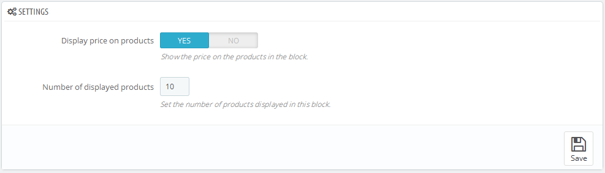
- 1. Отображать цену продукта.
- 2. Количество отображаемых продуктов.
Добавить или удалить родственные продукты к основному вы можете в настройках продукта Catalog->Products.
- 1. Перейдите в вкладку TM Related Products
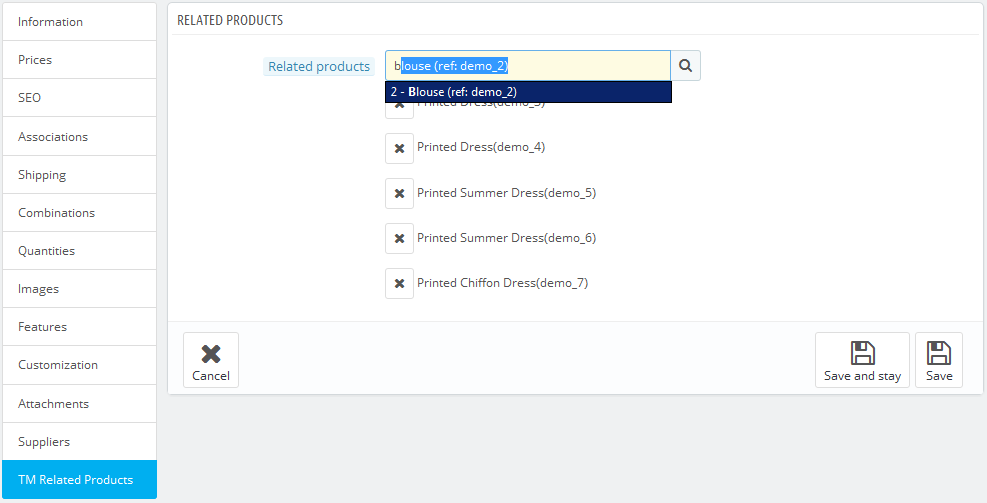
- 2. В поле поиска продуктов начните вводить название нужного, после чего выберете его из предложенных вариантов;
- 3. Для удаления продукта из списка нажмите крестик перед нужным продуктом;
- 4. После внесения всех изменений нажмите одну из кнопок сохранения Save and Stay или Save
TM Social Login
Модуль который позволяет регистрироваться и авторизироваться с помощью данных полученных из страниц клиентов в социальных сетях Facebook и Google.
Установка и удаление модуля
Модуль устанавливается и удаляется как любой другой модуль PrestaShop.
Настройки модуля
После установки модуля вы можете настраивать его на странице конфигураций модуля.
Для того чтобы получить необходимые данные для настройки модуля вам нужно создать соответствующее приложение (Application) на нужном ресурсе.
Более подробную информацию вы можете получить, перейдя по следующим ссылкам Google App и Facebook App.
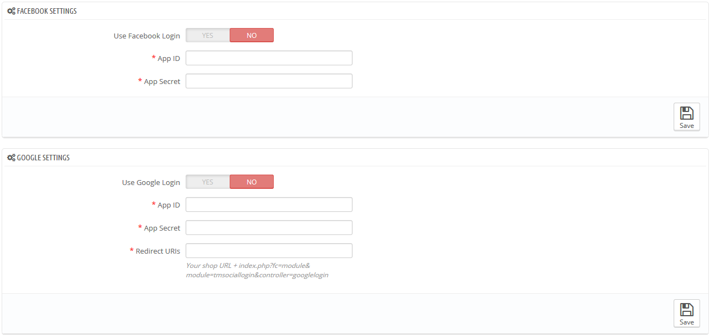
Не обязательно использовать оба варианта авторизации (Google, Facebook) одновременно, вы можете использовать только один.
Поля Facebook
- 1. ID вашего приложения.
- 2. Секретный ключ вашего приложения.
Поля Google
- 1. ID вашего приложения.
- 2. Секретный ключ вашего приложения.
- 3. Путь переадресации после авторизации (your shop URL+index.php?fc=module&module=tmsociallogin&controller=googlelogin).
Путь переадресации обязательно должен совпадать с тем, который вы указали при создании Google App.
TM Newsletter
Модуль отображает уведомление с предложением подписаться на рассылку магазина в виде всплывающего окна. В модуле можно включить проверку введенного email с помощью подтверждающего письма. Так же можно настроить промежуток времени между напоминаниями для зарегистрированных и не зарегистрированных пользователей. Зарегистрированные пользователи могут навсегда отказаться от напоминаний.
Установка и удаление модуля
Модуль устанавливается и удаляется как любой другой модуль PrestaShop.
Настройки модуля
После установки модуля его можно настраивать на странице конфигураций модуля.
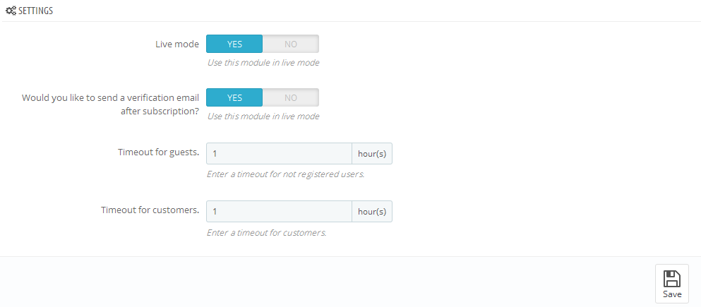
- 1. Live mode (Активный Режим) - включить/выключить модуль.
- 2. Would you like to send a verification email after subscription? (Отправить письмо с подтверждением после подписки?)- включить/выключить отправку подтверждающего письма.
- 3. Timeout for guests (Таймаут всплывающего напоминая о подписке для гостей). - установить таймаут всплывающего напоминая о подписке для гостей.
- 4. Timeout for customers (Таймаут всплывающего напоминая о подписке для зарегистрированных пользователей). - установить таймаут всплывающего напоминая о подписке для зарегистрированных пользователей.
Для работы модуля необходимо, чтобы был установлен и включен модуль "Newsletter block".
TM Olark Chat
Модуль для отображения чата Olark Chat на фронтенде вашего магазина.
Установка и удаление модуля
Модуль устанавливается и удаляется как любой другой модуль PrestaShop.
Настройки модуля
После установки модуля вы можете настраивать его на странице конфигураций модуля.
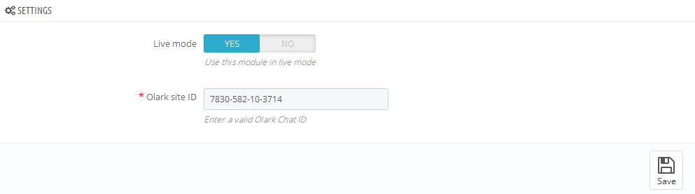
Для того что бы настроить Olark Chat, который присутствует на демо шаблона, вам нужно зарегистрироваться на официальном сайте и получить ID для вашего сайта. Введите ваш ID в поле "Olark site ID" и переведите модуль в "Live mode". После чего сохраните настройки, нажав кнопку Save.
Политика файлов Cookies
Cookies - это небольшие текстовые файлы, которые веб-сайты создают на компьютерах пользователей. Они используются для идентификации пользователей и улучшения качества использования веб-сайта. Cookies являются важной частью многих функций веб-сайтов.
Например, cookies позволяют онлайн магазинам запоминать, какие товары вы добавили в корзину. Также они сохраняют данные входа на сайт или предоставляют ценную статистику использования и информацию владельцам сайтов.
Если у вас есть веб-сайт, он почти наверняка использует cookies. Их главная функция - изучать количество и интересы пользователей через специальные инструменты, например Google Analytics. Также они могут использоваться для отображения объявлений, или – если у вас есть онлайн-магазин – быть ключевой частью системы электронной коммерции.
26 мая 2012 г. - ICO опубликовал акт о том, что "подразумеваемое согласие" не допускается и необходимо сообщать о политике приватности/cookies.
Для Вашего удобства, мы добавили модуль Cookieslaw в нашу тему.
Его очень легко настроить.
- Найдите его в папке manual_install шаблона (если вы установили шаблон вручную с демо-данными, модуль будет добавлен автоматически).
-
Затем найдите его в списке модулей в панели управления (модуль Cookieslaw в разделе "Функции front-office") и нажмите кнопку Install (Установить).

-
После установки (пропустите данный этап, если вас автоматически перенаправило на страницу настроек модуля) нажмите кнопку Configure (Настроить).

-
Задайте все нужные настройки и нажмите кнопку Save (Сохранить).
Настройки:
- - Display at the top of the page(by default) (Отображать в верхней части страницы (по умолчанию)). Если отключить данную опцию, модуль будет отображаться в нижней части страницы.
- - Cookies Policy link (Ссылка на политику файлов Cookies).
- - Link to the page where the user is redirected in case he does not accept the Cookies Policy (Ссылка на страницу, куда перенаправляется пользователь в том случае, если он отказывается принимать политику файлов Cookies).
Также, мы рекомендуем следующие модуля:
Дополнение куда обращаться за помощью, поддержкой и дополнительной информацией
Мы постарались сделать данную документацию как можно более доступной и понятной. Тем не менее, в случае возникновения любых сложностей с шаблоном PrestaShop, предложений по улучшению шаблонов или документации, Вы можете связаться с командой технической поддержки следующим образом:
Помощь и поддержка
Полезные ссылки
- Официальный сайт PrestaShop
- Скачать
- Аддоны: модули, темы, и т.п.
- Англоязычная документация
- Форум
- Вики
- Туториалы по PrestaShop
Загрузка данных с серверов Google
В некоторых странах существуют проблемы с подключением к серверам Google. Поэтому могут возникнуть сложности с загрузкой шрифтов Google Fonts и библиотек Java Script с Google CDN. В таком случае, для решения сделайте следующее:
Не загружаются шрифты Google Fonts:
Откройте файл \themes\theme****\header.tpl.
Найдите строку:
<link rel="stylesheet" href="http{if Tools::usingSecureMode()}s{/if}://fonts.googleapis.com/css?family=[---your_web_font_name_here---]" type="text/css" media="all" />Замените ее на:
<link rel="stylesheet" href="http://fonts.useso.com/css?family=[---your_web_font_name_here---]" type="text/css" media="all" />